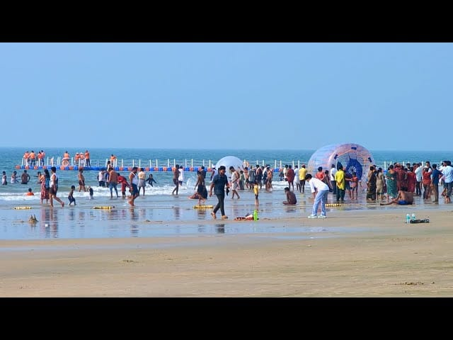
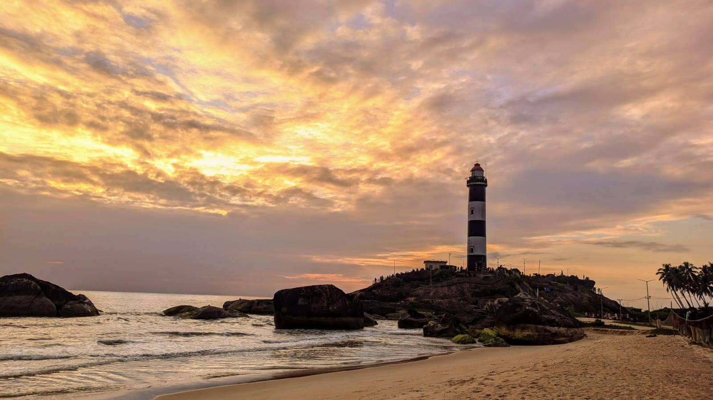
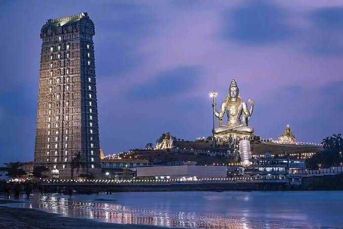

Discover beautiful beaches, historic temples, scenic coastal
roads, fishing towns and remarkable landscapes along
Karnataka's Arabian Sea coastline.
Coastal Karnataka is a diverse travel region stretching
along the Arabian Sea. It combines pilgrimage towns,
sandy beaches, historic temples, river estuaries,
fishing communities and scenic stretches of coastline.
Whether you enjoy cultural sightseeing, photography,
peaceful seaside visits or family road trips, the region
offers plenty of options.
Mangalore is a convenient starting point for exploring
the southern coast. From there, travellers can plan
shorter visits around Udupi and Malpe or continue
northwards towards Maravanthe, Murudeshwar, Gokarna
and Karwar.
The best itinerary depends on your available time.
Instead of rushing through all the destinations in a
single trip, choose places that fit your route and allow
enough time for sightseeing, meals and rest.
Mangalore is a convenient starting point for exploring
the coastal destinations of Karnataka.
Mangalore, also known as Mangaluru, combines coastal
scenery, religious landmarks, local markets and a
distinctive food culture. Visitors can explore the city
before heading to nearby beaches or beginning a longer
journey along the coastline.
Depending on your interests, you can include city
sightseeing, a temple visit, a seaside stop or time
to enjoy local cuisine. Mangalore also works well as
a starting point for trips towards Udupi and other
northern coastal destinations.
Ullal and Someshwara offer dramatic coastal scenery
south of Mangalore.
Ullal and Someshwara are known for their coastal setting
and striking sea views. Someshwara's rocky shoreline
provides a different landscape from the broad sandy
beaches found elsewhere along the coast.
These areas are best approached as scenic sightseeing
stops when sea conditions are rough. Strong waves,
currents and slippery rocks can make parts of the
shoreline dangerous. Follow warning signs and avoid
entering restricted areas.
3. Udupi — Temple Heritage and Local Cuisine
Udupi is renowned for Sri Krishna Matha and its
cultural and culinary traditions.
Udupi is an important pilgrimage destination, especially
for visitors to Sri Krishna Matha. The town is also
famous for its traditional vegetarian cuisine and
provides access to several beaches in the surrounding
coastal area.
Visitors should allow time for temple visits, meals and
local sightseeing. If you are travelling with family,
check temple arrangements and plan around the expected
crowds, especially on weekends and festival days.
4. Malpe Beach — Sand, Sea and Island Excursions

Add the photograph at assets/blogs/malpe-beach.jpg.
'">
Malpe Beach is a popular coastal stop near Udupi,
with sightseeing options that vary by season.
Malpe Beach is a popular destination for visitors
exploring the Udupi coast. Its shoreline makes it a
convenient stop for a seaside walk, coastal photography
and enjoying the atmosphere around the beach.
Boat trips to St. Mary's Island may be available when
services are operating and conditions permit. Boat
schedules, access arrangements and safety restrictions
can change, so confirm local information before planning
your day around an island visit.
5. Kaup Lighthouse — A Coastal Landmark

Add the photograph at assets/blogs/kaup-lighthouse.jpg.'">
Kaup Lighthouse is a distinctive landmark on the
coast south of Udupi.
Kaup, also written as Kapu, is known for its lighthouse
and coastal landscape. It can be a worthwhile addition
to an itinerary that includes Udupi and Malpe.
Check current lighthouse access, operating hours and
any applicable visitor requirements before travelling.
Keep a safe distance from the water and follow local
instructions around rocky sections of the shore.
Northern Coastal Karnataka
6. Maravanthe Beach — A Remarkable Coastal Road
Maravanthe is famous for the distinctive landscape
where the sea and river border the coastal highway.
Maravanthe is one of Coastal Karnataka's most memorable
scenic stretches. Here, the Arabian Sea and the
Souparnika River lie on opposite sides of the coastal
road, creating a striking landscape for travellers.
It is an excellent place to appreciate the coastline
during a road trip. Use safe, designated stopping
locations for photographs and never stop in moving
traffic or walk onto the highway.
7. Kundapura — Coastal Culture and Local Experiences
Kundapura provides access to coastal scenery,
waterways and regional food traditions.
Kundapura is a useful stop for travellers exploring
the northern Udupi district. The wider area offers
coastal landscapes, waterways, temples and opportunities
to experience local food and culture.
On a longer journey, Kundapura can also be a practical
place to schedule a meal break or an overnight stop,
depending on your route. Select nearby attractions
according to available time instead of trying to cover
too many locations in a single day.
8. Murudeshwar — Temple and Sea Views

Add the photograph at assets/blogs/murudeshwar-coast.jpg.'">
Murudeshwar combines an important religious
destination with expansive coastal views.
Murudeshwar is widely recognised for its monumental
Shiva statue, temple complex and setting beside the
Arabian Sea. It is a popular destination for pilgrims,
families and travellers taking a longer drive along
the Karnataka coast.
Allow time for the temple area and nearby viewpoints.
Visitors should check current access arrangements,
follow temple instructions and dress respectfully
when entering religious spaces.
Murudeshwar can be included in a journey towards
Honnavar, Gokarna and Karwar. Travellers starting in
Mangalore should consider an overnight stop if the
overall itinerary would otherwise be too rushed.
9. Honnavar — Rivers, Estuaries and Natural Scenery
Honnavar offers a different coastal experience
through its river and estuary landscapes.
Honnavar is a coastal town where rivers, estuaries and
the sea contribute to the surrounding scenery. The
wider region appeals to travellers who enjoy natural
landscapes, photography and quieter stops between
larger tourist destinations.
Individual attractions may have different access
arrangements and operating conditions. Confirm local
details before setting out, particularly if your
plans involve boats or visits to natural areas.
10. Gokarna — Pilgrimage and Beach Experiences
Gokarna combines pilgrimage traditions with
beaches and coastal scenery.
Gokarna is both a significant pilgrimage destination
and a popular coastal getaway. Visitors can explore
religious sites and spend time around the area's
beaches, each offering a different setting and
access experience.
Some beaches involve steep paths, uneven ground or
longer walks. Choose locations suited to your group,
wear appropriate footwear and avoid dangerous sea
conditions. Respect religious customs and local
instructions throughout your visit.
Gokarna generally deserves more time than a brief
roadside stop. If you want to explore several beaches
or visit religious sites, consider an overnight stay.
11. Karwar — Relaxed Coastal Landscapes
Karwar offers coastal scenery and opportunities
for a relaxed stop on a longer holiday.
Karwar, in Uttara Kannada district, is known for its
coastal setting, beaches and views of the Arabian Sea.
It can be a rewarding destination for visitors
continuing north after Gokarna.
Depending on your interests and available time, you
can plan a relaxed seaside visit or use Karwar as a
base for exploring selected nearby attractions.
Confirm accommodation, local access and activity
arrangements before departure.
12. Yana Rock Formations — An Inland Nature Excursion
Yana's distinctive rock formations offer a
contrasting experience away from the immediate coast.
Yana is an inland destination known for its striking
rock formations and forest surroundings. Although it
is not directly on the coastline, it can add variety
to a longer holiday through the wider coastal and
Western Ghats region.
Visiting Yana requires additional road time and walking.
It is usually more suitable for a separately planned
excursion than an already busy coastal sightseeing day.
Check current access conditions and local guidance
before visiting.
How to Plan a Coastal Karnataka Road Trip
The coastline covers a substantial distance, so the
most enjoyable itinerary is one that groups nearby
destinations together. These examples can help you
decide where to begin.
Two days — Southern coastal highlights:
Focus on Mangalore, Udupi and selected nearby
attractions such as Malpe or Kaup. Your final route
should account for your starting point and return trip.
Three to four days — Central coast:
Consider Udupi, Maravanthe and Murudeshwar, with
overnight accommodation if required. Avoid adding
far-north destinations without checking driving times.
Five days or more — Northern coastal journey:
Continue towards Honnavar, Gokarna and Karwar, allowing
time for sightseeing and rest. Yana may be a separate
inland excursion if your schedule permits.
These are broad planning examples rather than guaranteed
schedules. Distances, traffic, weather, seasonal access
and the time spent at each attraction can all affect
the final itinerary.
Best Time to Visit Coastal Karnataka
Conditions vary along the coast throughout the year.
The monsoon often brings heavy rain and rough seas,
which can affect beach visits, boating and road travel.
Outside the monsoon, hot and humid weather may make
midday sightseeing tiring.
Before departure, check the weather forecast, local
advisories and the operating status of attractions
you intend to visit. Boat services and access to
certain beaches or viewpoints may be restricted
when conditions are unsuitable.
Coastal Travel and Safety Tips
Check current road and weather conditions before leaving.
Confirm boat schedules rather than assuming services will operate.
Follow swimming restrictions and local beach warnings.
Keep a safe distance from rocky shores and powerful waves.
Respect religious customs when visiting temples.
Carry drinking water, sun protection and comfortable footwear.
Use safe parking and designated stopping areas for photographs.
Allow sufficient time for meals, breaks and overnight stops.
Avoid littering and help protect coastal and forest environments.
Plan Your Coastal Karnataka Trip from Mangalore
Radhakrishna Taxi Service accepts enquiries for journeys
from Mangalore to destinations across coastal Karnataka.
Whether you are planning a shorter sightseeing trip or
a multi-day coastal holiday, share your preferred route
and travel dates to discuss your requirements.
When requesting a quotation, mention your pickup
location, passenger count, selected destinations,
preferred vehicle and whether you require an overnight
itinerary. Confirm vehicle availability, trip duration
and applicable charges before booking.
Ready to Explore Coastal Karnataka?
Tell us which places you want to visit and when
you plan to travel. Contact Radhakrishna Taxi
Service to enquire about your journey from Mangalore.
1. What are the best places to visit in Coastal Karnataka?
Popular destinations include Mangalore, Ullal,
Someshwara, Udupi, Malpe, Kaup, Maravanthe,
Kundapura, Murudeshwar, Honnavar, Gokarna and Karwar.
Yana is a nearby inland excursion option for a
longer itinerary.
2. How many days do I need for a Coastal Karnataka trip?
Two days may suit a shorter trip around Mangalore
and Udupi. Exploring farther north towards Gokarna
and Karwar generally requires additional days and
overnight stops, depending on your starting point.
3. Can I visit Malpe and St. Mary's Island?
Boat trips may operate when weather and sea
conditions permit. Check current boat schedules,
departure arrangements and access restrictions
before planning an island visit.
4. Is Maravanthe worth visiting?
Maravanthe is well known for its scenic coastal
highway, with the Arabian Sea on one side and
the Souparnika River on the other. Use designated
stopping places and avoid stopping in traffic.
5. Can I visit Murudeshwar and Gokarna on the same trip?
Yes. They can be included in a longer coastal
itinerary. Allow enough time for travel, sightseeing
and rest, particularly if you are starting in Mangalore.
6. Is Yana part of the Coastal Karnataka coastline?
Yana is an inland destination rather than a
coastal beach location. It can be included as
an additional excursion when your itinerary and
available road time permit.
7. Can I arrange a taxi trip from Mangalore?
You can contact Radhakrishna Taxi Service to
enquire about vehicle availability and a quotation.
Share your travel dates, passenger count and
proposed destinations when making an enquiry.
Travel information is intended for general planning.
Weather, attraction timings, boat services, access
arrangements and local restrictions may change.
Verify current details before departure.